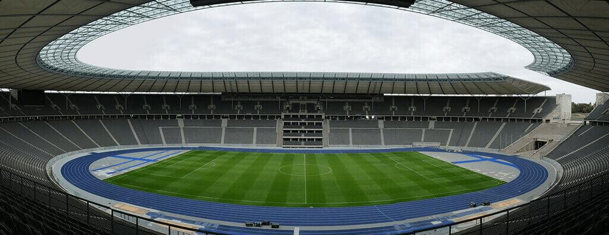

대한민국 2번째 축구 전용경기장, 광양축구전용구장
광양축구전용구장은 전라남도 광양시 금호동 포스코 광양제철소 내에 위치한 관중석 13,496석 규모의 축구전용구장으로, 1993년 대한민국에서 2번째로 개장한 축구 경기장이다.1992년 1월 착공하여 1992년 9월 완공 이 후 1994년 12월 16일 전남 드래곤즈가 창단되어 K리그에 참여하면서, 1995년 3월 아디다스 컵부터 전남 드래곤즈의 홈구장으로 사용되고 있다.남쪽 관중석 뒤에 천연색 전광판 1개를 갖추고 있으며, 원폴형 조명타워가 설치되어 있다.
도로명 주소
전라남도 광양시 금호동 700